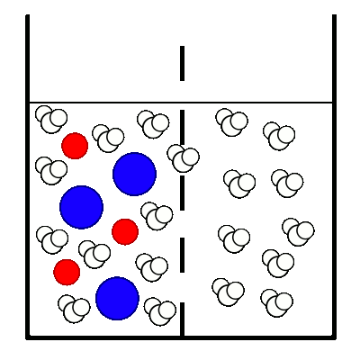

Erregungsleitung (elektrisch): Chemische Grundlagen
Osmose

Kaliumionen (in wässriger Lösung);
Chloridionen (in wässriger Lösung);
- Die semipermeable Membran ist nur durchlässig für Wassermoleküle, nicht jedoch für Ionen.
- Die Wassermoleküle können ungehindert durch die Poren der semipermeablen Membran hindurchwandern.
- Nach einiger Zeit stellt sich ein dynamisches Gleichgewicht ein, bei dem genau so viele Wassermoleküle nach links in Richtung der höher konzentrierten Kaliumchlorid-Lösung wandern als auch zurück nach rechts ins reine Wasser. Die beiden Wasserspiegel links und rechts bleiben dann konstant.
Externe Links
Semipermeabilität
Osmose